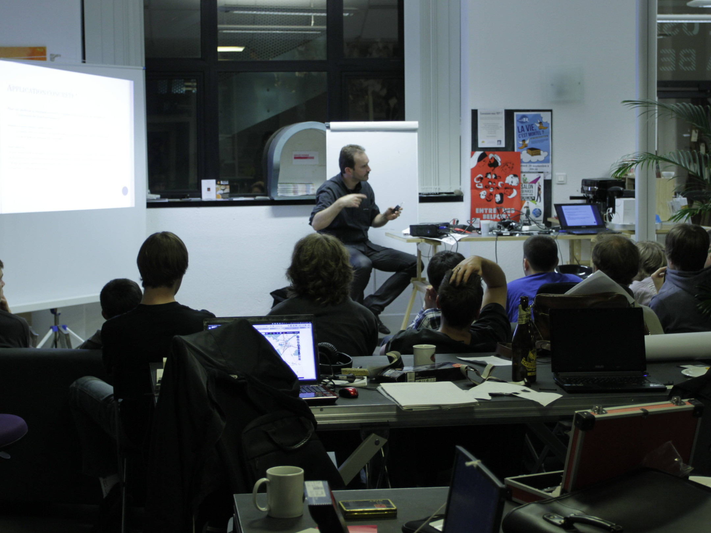

I am keen on building large-scale web services using open-source stacks.
I am now completing my engineering studies at ENSIIE Paris and TELECOM SudParis.
I will graduate in September 2016.
During this cursus, from 2013 to 2016, I held a Junior Systems & Networks Engineer position at SNCF Réseau, the french national railway company, as part of my apprenticeship.
I especially worked on the overhaul of the embedded information system of IRIS 320, a special high speed train dedicated to railway measurement.
I am also closely following the OpenStack project, on which I had my first experience during my Summer Student internship at CERN in 2013.
Since then, I have been studying the Nova scheduler and the implementation of Software-Defined Networking in OpenStack; my last semester of studies particularly focused on telecommunications, with a full course on SDN and NFV.
Skills
System administration
My primary operating system is Arch Linux.
I manage several dedicated servers that run PHP / Python / Ruby on Rails applications, VPN gateways and distributed filesystems, among others.
See a list
| ArchLinux |
|
| Debian / Ubuntu |
|
| Entreprise Linuces |
|
| Windows 7 and later |
|
Virtualization and cloud
I use Proxmox VE and closely follow infrastructure technologies such as OpenStack, Docker and CoreOS.
See a list
| Proxmox VE (KVM + QEMU) |
|
|
OpenStack (Nova, Swift, Neutron)
|
|
| Docker |
|
| VMware ESXi |
|
Programming languages
Python 3 and Node.js are my prefered platforms for developping cross-platform applications.
On Windows, I have a good experience developping Windows Forms and ASP.NET / Nancy web apps.
I used C on numerous occasions, mostly when performance was the key.
See my code
GitHub profile
See a list
| Python |
|
| JavaScript |
|
| C# / .NET |
|
| C |
|
| Java |
|
| C++ |
|
Web
I am keen on building high-performance web services.
Micro-frameworks in Python 3 and Node.js are my prefered environments, but I have an experience in PHP and C# / .NET too.
I am familiar with jQuery, AngularJS and CSS on the client-side.
See a list
Runtimes
| Express.js / Koa.js |
|
| Flask (Python) |
|
| PHP micro frameworks |
|
| Django (Python) |
|
Servers
Client-side
| AngularJS |
|
| jQuery |
|
| HTML |
|
| CSS |
|
Databases
I learnt SQL with MySQL and Postgres and am now proficient at MongoDB.
See a list
| PostgreSQL |
|
| MySQL, MariaDB |
|
| MongoDB |
|
| CouchDB |
|
Networks
I have a good knowledg
My last semester of studies focused on cellular networks and SDN protocols, mostly OpenFlow.
See a list
| IP / TCP / UDP |
|
| REST architecture w/ HTTP |
|
| GPRS / UMTS / LTE |
|
|
VLANs, LAG (LACP), STP (HP switches)
|
|
|
OpenFlow
|
|
Work
I am currently working at SNCF Group, the French national railway company.
During Summer 2013, I was a Summer Student at CERN, the European Organization for Nuclear Research.
SNCF Réseau
since September 2013
SNCF Réseau is the government-owned company responsible for France's national rail network maintenance.
I work on modernizing the computing system of IRIS 320, a special high-speed train customized for railway inspection purposes, using virtualization and high availability technologies.
Learn more about IRIS 320
CERN
Summer 2013
As a Summer Student, I worked on moving a WLCG testing tool to CERN's new OpenStack-based private cloud infrastructure.
It was the first occasion for me to put my hands on a very large computing infrastructure, and a great opportunity to discover a lot of different cultures gathered in the heart of Europe.
Read my report
Education
I am currently studying Computer Science at ENSIIE Paris.
From September 2011 to June 2013, I have been doing my BSc in Belfort, France.
ENSIIE Paris / TELECOM SudParis
since September 2013
I did my first two years of engineering studies in ENSIIE Paris.
During my last semester, from September 2015 to January 2016, I took a specialized course at TELECOM SudParis focusing on mobile cellular networks (LTE / 5G) and software-defined networking (SDN / NFV).
Graduation expected in August 2016.
IUT Belfort-Montbéliard
2011 - 2013
I obtained a DUT Informatique in 2013, which is the French equivalent to a BSc in Computer Science.
My main academic project consisted in the design and development of a web services platform for l'Usine à Belfort, a local coworking space.
During this cursus, I also co-founded HackGyver, Belfort's hackerspace.
Side projects, hobbies and stuff I am proud of
Huawei Telecom Seeds for the Future
I was a laureate of this contest from Huawei that included a one-month trip to China as a reward.
We visited the cities of Beijing, Shenzhen, Guangzhou and Hong-Kong, and were given Chinese courses and IT training.

HackGyver
I co-founded HackGyver, Belfort's hackerspace, in March 2012.
Its members particularly focus on computer security, reverse engineering and electronics.
About HackGyver
In May 2012, @maijin212 and I funded HackGyver, Belfort's hackerspace.
From May 2012 to March 2013, we organized several public events and weekly meetings at L'Usine à Belfort, promoted the association, and deployed a website and a wiki.
I was personnally in charge of the management of the association's treasury and websites. Below is an interview I made with Besançon TV about HackGyver (in French) :


{kind=link}